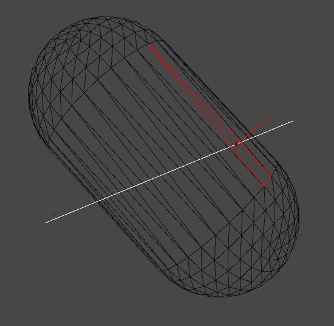
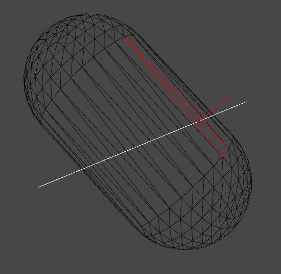

KDopTree-Intersection-Detection
2017-8-4

在基本理解了 UE4 中的基于 KDopTree 的相交检测后，参照其方法在 Unity 中实现了一个版本，从运行效率上来看还是不错的，非常适合静态网格（非 SkinnedMesh）。由于没有像 UE4 中那样使用 SIMD，所以性能还不是最好的。
完整代码可以从 KDopTree-Intersection-Detection@github 获取。
2017-8-4

在基本理解了 UE4 中的基于 KDopTree 的相交检测后，参照其方法在 Unity 中实现了一个版本，从运行效率上来看还是不错的，非常适合静态网格（非 SkinnedMesh）。由于没有像 UE4 中那样使用 SIMD，所以性能还不是最好的。
完整代码可以从 KDopTree-Intersection-Detection@github 获取。